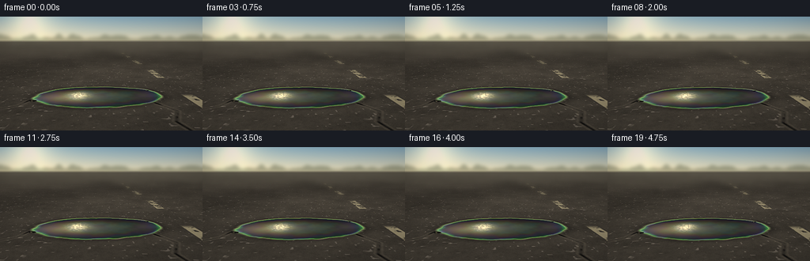
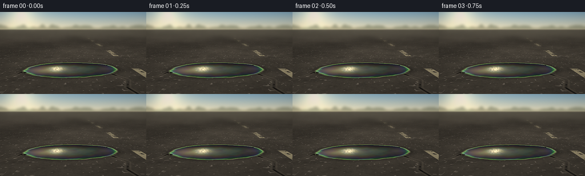
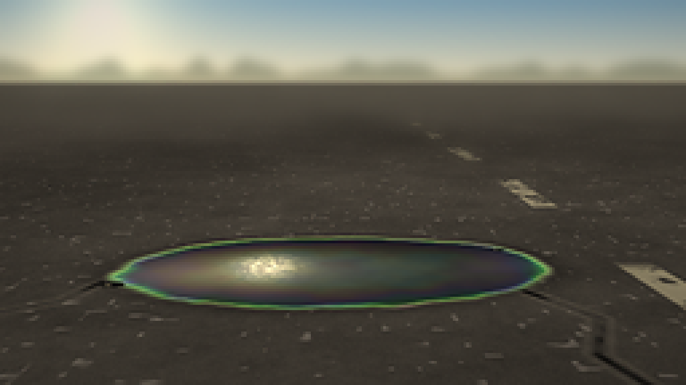
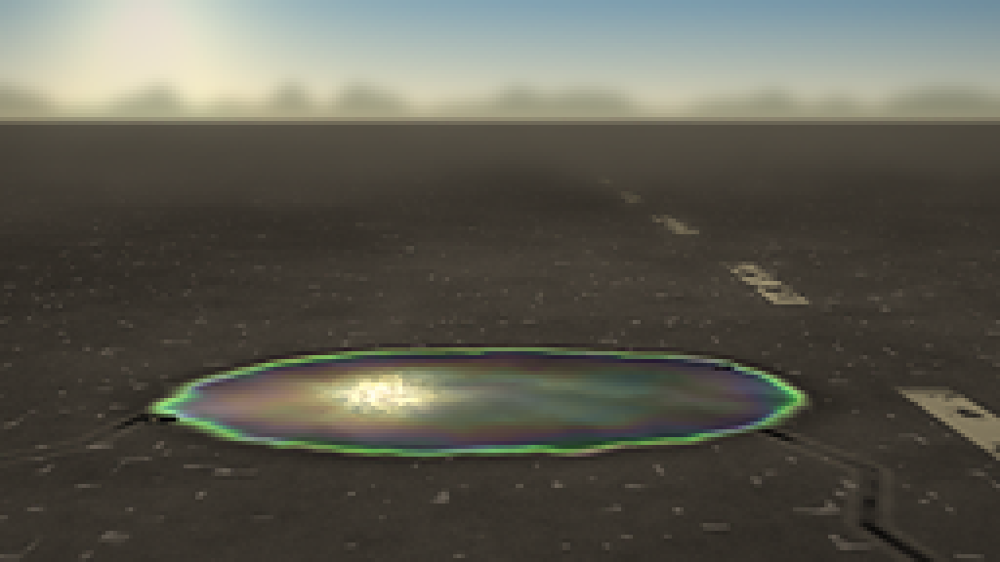

CODING AGENTS AS PIXEL WORLD MODELS
traex/DeepSeek-V4.1-Flash · phygen_081
点击播放 · 原生 RGB 像素
逐轮保存的候选
回放视频、检查图与代码变化。
每份候选均可单独播放。实际图片检查记录在下方工具轨迹中。
候选 01播放与检查图
点击播放 · 原生 RGB 像素

展开代码变化
--- 上一保存版本
+++ 本次保存版本
@@ -0,0 +1,321 @@
+from pathlib import Path
+
+import numpy as np
+from PIL import Image, ImageFilter
+
+import artifact_io
+
+
+OUT_W, OUT_H = 256, 144
+SS = 2
+W, H = OUT_W * SS, OUT_H * SS
+FPS = 4.0
+N_FRAMES = 20
+HORIZON = 30 * SS
+FOCAL = 240.0 * SS
+CAM_HEIGHT = 0.47
+SEED = 1807
+
+
+def smoothstep(edge0, edge1, value):
+ t = np.clip((value - edge0) / (edge1 - edge0), 0.0, 1.0)
+ return t * t * (3.0 - 2.0 * t)
+
+
+def hash2(ix, iz, seed):
+ value = np.sin(ix * 127.1 + iz * 311.7 + seed * 74.7) * 43758.5453123
+ return value - np.floor(value)
+
+
+def value_noise(x, z, scale, seed):
+ gx = x * scale
+ gz = z * scale
+ ix = np.floor(gx)
+ iz = np.floor(gz)
+ fx = gx - ix
+ fz = gz - iz
+ ux = fx * fx * (3.0 - 2.0 * fx)
+ uz = fz * fz * (3.0 - 2.0 * fz)
+
+ a = hash2(ix, iz, seed)
+ b = hash2(ix + 1.0, iz, seed)
+ c = hash2(ix, iz + 1.0, seed)
+ d = hash2(ix + 1.0, iz + 1.0, seed)
+ return (a * (1.0 - ux) + b * ux) * (1.0 - uz) + (c * (1.0 - ux) + d * ux) * uz
+
+
+def fbm(x, z, scales, seed):
+ total = np.zeros_like(x, dtype=np.float64)
+ weight = 0.0
+ amplitude = 1.0
+ for octave, scale in enumerate(scales):
+ total += amplitude * value_noise(x, z, scale, seed + octave * 19)
+ weight += amplitude
+ amplitude *= 0.54
+ return total / weight
+
+
+def fbm_signed(x, z, scales, seed):
+ return fbm(x, z, scales, seed) * 2.0 - 1.0
+
+
+def segment_distance(x, z, ax, az, bx, bz):
+ vx, vz = bx - ax, bz - az
+ t = np.clip(((x - ax) * vx + (z - az) * vz) / (vx * vx + vz * vz), 0.0, 1.0)
+ return np.sqrt((x - (ax + t * vx)) ** 2 + (z - (az + t * vz)) ** 2)
+
+
+def polyline_distance(x, z, points):
+ distance = np.full_like(x, 1e6, dtype=np.float64)
+ for (ax, az), (bx, bz) in zip(points[:-1], points[1:]):
+ distance = np.minimum(distance, segment_distance(x, z, ax, az, bx, bz))
+ return distance
+
+
+def gaussian_blur(rgb, radius):
+ array = np.clip(rgb * 255.0, 0, 255).astype(np.uint8)
+ was_single_channel = array.ndim == 3 and array.shape[-1] == 1
+ if was_single_channel:
+ array = array[..., 0]
+ image = Image.fromarray(array)
+ result = np.asarray(image.filter(ImageFilter.GaussianBlur(radius)), dtype=np.float64) / 255.0
+ if was_single_channel:
+ result = result[..., None]
+ return result
+
+
+def ground_coordinates(frame):
+ yy, xx = np.mgrid[0:H, 0:W].astype(np.float64)
+ depth_pixels = np.maximum(yy - HORIZON, 1.0)
+
+ # A restrained forward dolly gives the slick parallax without changing the shot.
+ progress = frame / (N_FRAMES - 1)
+ cam_z = 0.036 * progress
+ cam_x = 0.0055 * np.sin(progress * np.pi * 0.82)
+
+ z = FOCAL * CAM_HEIGHT / depth_pixels + cam_z
+ x = (xx - W * 0.505) * z / FOCAL + cam_x
+ return xx, yy, x, z
+
+
+def render_road(x, z, yy):
+ macro = fbm(x, z, (0.72, 1.65, 3.7), SEED)
+ medium = fbm(x, z, (7.0, 15.0, 31.0), SEED + 61)
+ fine = fbm(x, z, (54.0, 92.0, 155.0), SEED + 103)
+ grain = hash2(np.floor(x * 255.0), np.floor(z * 255.0), SEED + 151)
+
+ aggregate_field = value_noise(x, z, 42.0, SEED + 211)
+ aggregate = smoothstep(0.835, 0.955, aggregate_field)
+ aggregate *= 0.48 + 0.52 * value_noise(x, z, 89.0, SEED + 223)
+
+ luminance = 0.215 + 0.105 * (macro - 0.5) + 0.060 * (medium - 0.5)
+ luminance += 0.035 * (fine - 0.5) + 0.026 * (grain - 0.5)
+ luminance += 0.155 * aggregate
+ luminance = np.clip(luminance, 0.075, 0.56)
+
+ # Warm direct sun with a faint cool cast in the aggregate.
+ road = np.stack(
+ (
+ luminance * 1.075 + aggregate * 0.018,
+ luminance * 1.018 + aggregate * 0.020,
+ luminance * 0.928 + aggregate * 0.030,
+ ),
+ axis=-1,
+ )
+
+ # A few hairline cracks make the road scale legible without dominating the shot.
+ crack_a = polyline_distance(
+ x,
+ z,
+ ((-0.94, 0.91), (-0.78, 1.06), (-0.81, 1.23), (-0.61, 1.37), (-0.57, 1.50)),
+ )
+ crack_b = polyline_distance(
+ x,
+ z,
+ ((0.49, 0.91), (0.43, 1.10), (0.50, 1.27), (0.38, 1.46)),
+ )
+ crack_distance = np.minimum(crack_a, crack_b)
+ crack_core = 1.0 - smoothstep(0.0045, 0.0105, crack_distance)
+ crack_edge = smoothstep(0.008, 0.022, crack_distance) * (1.0 - smoothstep(0.019, 0.034, crack_distance))
+ crack_core *= smoothstep(0.35, 0.60, fbm(x, z, (9.0, 24.0), SEED + 307))
+ road *= 1.0 - 0.72 * crack_core[..., None]
+ road += 0.055 * crack_edge[..., None] * np.array((1.0, 0.94, 0.82))
+
+ # Worn lane paint on the right is a strong but secondary road cue.
+ paint_x = 0.745 + 0.013 * np.sin(z * 2.2 + 0.4)
+ paint_profile = 1.0 - smoothstep(0.042, 0.055, np.abs(x - paint_x))
+ dash_phase = np.mod(z - 0.88, 1.42)
+ dash = smoothstep(0.06, 0.13, dash_phase) * (1.0 - smoothstep(0.70, 0.80, dash_phase))
+ wear = smoothstep(0.28, 0.52, fbm(x, z, (23.0, 48.0, 96.0), SEED + 401))
+ paint = paint_profile * dash * wear
+ paint *= smoothstep(0.84, 0.92, z) * (1.0 - smoothstep(7.2, 8.3, z))
+ paint_color = np.array((0.69, 0.66, 0.54))
+ road = road * (1.0 - 0.70 * paint[..., None]) + paint_color * 0.70 * paint[..., None]
+
+ # Distant road is softly out of focus and haze-lifted.
+ blurred = gaussian_blur(road, 2.8 * SS)
+ focus = smoothstep(HORIZON + 5 * SS, HORIZON + 55 * SS, yy)
+ road = blurred * (1.0 - focus[..., None]) + road * focus[..., None]
+ haze = (1.0 - smoothstep(HORIZON, HORIZON + 25 * SS, yy))[..., None]
+ road = road * (1.0 - 0.22 * haze) + np.array((0.68, 0.68, 0.61)) * 0.22 * haze
+ return road
+
+
+def puddle_geometry(x, z):
+ cx, cz = -0.045, 1.625
+ rx, rz = 0.505, 0.305
+ angle = 0.075
+ ca, sa = np.cos(angle), np.sin(angle)
+ dx = (x - cx) * ca + (z - cz) * sa
+ dz = -(x - cx) * sa + (z - cz) * ca
+ q = (dx / rx) ** 2 + (dz / rz) ** 2
+
+ broad = fbm_signed(x, z, (2.4, 5.2, 10.5), SEED + 509)
+ small = fbm_signed(x, z, (18.0, 37.0, 72.0), SEED + 557)
+ shape = q + 0.245 * broad + 0.052 * small
+ return shape, dx, dz
+
+
+def render_puddle(road, x, z, frame):
+ shape, dx, dz = puddle_geometry(x, z)
+ core = 1.0 - smoothstep(0.88, 1.01, shape)
+ film = 1.0 - smoothstep(1.00, 1.19, shape)
+ halo = 1.0 - smoothstep(1.10, 1.58, shape)
+
+ # Slightly wet asphalt surrounding the oil.
+ road = road * (1.0 - 0.19 * halo[..., None])
+
+ texture = fbm(x, z, (5.0, 11.0, 25.0, 51.0), SEED + 601)
+ fine_texture = fbm_signed(x, z, (40.0, 83.0, 145.0), SEED + 647)
+ thickness = 0.34 + 0.23 * (1.0 - np.clip(shape, 0.0, 1.25))
+ thickness += 0.075 * fbm_signed(x, z, (8.0, 17.0, 34.0), SEED + 677)
+ thickness = np.clip(thickness, 0.18, 0.82)
+
+ # Thin-film interference: strongest in the feathered edge of the oil.
+ time_phase = 0.16 * np.sin(frame * 0.54 + texture * 7.0)
+ film_rgb = []
+ for wavelength, offset in ((650e-9, 0.0), (535e-9, 1.6), (455e-9, 3.2)):
+ phase = 4.0 * np.pi * 1.45 * (thickness * 1e-6) / wavelength + offset + time_phase
+ film_rgb.append(0.5 + 0.5 * np.cos(phase))
+ iridescence = np.stack(film_rgb, axis=-1)
+ iridescence = 0.18 + 0.82 * iridescence
+
+ film_only = np.clip(film - core, 0.0, 1.0)
+ iridescence_amount = 0.20 * core + 0.88 * film_only
+ iridescence_amount *= 0.52 + 0.48 * smoothstep(0.25, 0.78, texture)
+
+ # Horizon reflection occupies the upper part of the slick.
+ reflect_band = np.exp(-((dz / 0.205 + 0.20) ** 2))
+ sky_reflection = np.array((0.36, 0.45, 0.49))[None, None, :]
+ sky_reflection = sky_reflection * (0.30 + 0.82 * reflect_band[..., None])
+ sky_reflection *= (0.66 + 0.34 * texture[..., None])
+
+ dark_oil = np.array((0.032, 0.038, 0.040))[None, None, :]
+ oil = dark_oil + 0.33 * sky_reflection + iridescence * iridescence_amount[..., None] * 0.37
+
+ # A broad, warm solar sheen and a compact reflected glint.
+ sheen = np.exp(-((dx + 0.19) / 0.31) ** 2 - ((dz + 0.02) / 0.17) ** 2)
+ glint = np.exp(-((dx + 0.16) / 0.070) ** 2 - ((dz - 0.015) / 0.090) ** 2)
+ micro_ripple = 0.5 + 0.5 * np.sin(
+ 88.0 * dx + 31.0 * dz + 6.0 * fine_texture + frame * 0.42
+ )
+ glint *= 0.48 + 0.52 * micro_ripple
+ oil += np.array((0.30, 0.255, 0.175))[None, None, :] * sheen[..., None]
+ oil += np.array((0.76, 0.68, 0.49))[None, None, :] * glint[..., None]
+
+ # A dark inner boundary and a sun-catching upper-left rim.
+ gradient_y, gradient_x = np.gradient(film)
+ edge = np.sqrt(gradient_x * gradient_x + gradient_y * gradient_y)
+ edge = np.clip(edge * 24.0, 0.0, 1.0)
+ rim_direction = np.clip(0.60 - 0.75 * gradient_x + 0.55 * gradient_y, 0.0, 1.0)
+ oil *= 1.0 - 0.23 * edge[..., None] * (1.0 - rim_direction[..., None])
+ oil += np.array((0.38, 0.33, 0.22))[None, None, :] * (edge * rim_direction)[..., None]
+
+ oil = np.clip(oil, 0.0, 1.0)
+ road = road * (1.0 - film[..., None]) + oil * film[..., None]
+
+ # Two tiny satellite oil beads catch independent highlights.
+ drop_shapes = []
+ for dcx, dcz, drx, drz in ((-0.54, 1.48, 0.029, 0.019), (0.42, 1.79, 0.022, 0.015)):
+ drop_shapes.append(((x - dcx) / drx) ** 2 + ((z - dcz) / drz) ** 2)
+ drops = 1.0 - smoothstep(0.82, 1.08, np.minimum(*drop_shapes))
+ drop_color = np.array((0.052, 0.057, 0.054))
+ road = road * (1.0 - 0.85 * drops[..., None]) + drop_color * 0.85 * drops[..., None]
+ for dcx, dcz, drx, drz in ((-0.54, 1.48, 0.029, 0.019), (0.42, 1.79, 0.022, 0.015)):
+ qdrop = ((x - dcx) / drx) ** 2 + ((z - dcz) / drz) ** 2
+ drop = 1.0 - smoothstep(0.74, 1.04, qdrop)
+ highlight = np.exp(
+ -((x - (dcx - drx * 0.28)) / (drx * 0.25)) ** 2
+ - ((z - (dcz - drz * 0.22)) / (drz * 0.28)) ** 2
+ )
+ road += np.array((0.56, 0.51, 0.38))[None, None, :] * (drop * highlight)[..., None]
+
+ return road
+
+
+def render_sky(xx, yy):
+ u = xx / W
+ v = np.clip(yy / max(HORIZON, 1), 0.0, 1.0)
+ top = np.array((0.49, 0.66, 0.79))
+ bottom = np.array((0.88, 0.86, 0.76))
+ sky = top[None, None, :] * (1.0 - v[..., None]) + bottom[None, None, :] * v[..., None]
+
+ sun_x, sun_y = 0.145 * W, 0.015 * H
+ distance = np.sqrt((xx - sun_x) ** 2 + (yy - sun_y) ** 2)
+ glow = np.exp(-(distance / (0.095 * W)) ** 1.55)
+ haze = np.exp(-(distance / (0.31 * W)) ** 2)
+ sky += np.array((0.36, 0.29, 0.16))[None, None, :] * glow[..., None]
+ sky += np.array((0.12, 0.10, 0.06))[None, None, :] * haze[..., None]
+ sky = np.clip(sky, 0.0, 1.0)
+ sky = gaussian_blur(sky, 1.7 * SS)
+
+ # A low-contrast distant tree line gives the horizon a readable sense of place.
+ tree_noise = value_noise(xx / W * 31.0, np.zeros_like(xx), 1.0, SEED + 733)
+ tree_top = HORIZON - (2.0 + 7.0 * tree_noise) * SS
+ tree_mask = (yy >= tree_top) & (yy < HORIZON + 2 * SS)
+ tree_mask = tree_mask.astype(np.float64)
+ tree_mask = gaussian_blur(tree_mask[..., None], 2.1 * SS)[..., 0]
+ tree_color = np.array((0.25, 0.30, 0.23))
+ sky = sky * (1.0 - 0.42 * tree_mask[..., None]) + tree_color * 0.42 * tree_mask[..., None]
+ return sky
+
+
+def render_frame(frame):
+ xx, yy, x, z = ground_coordinates(frame)
+ road = render_road(x, z, yy)
+ road = render_puddle(road, x, z, frame)
+
+ sky = render_sky(xx, yy)
+ horizon_blend = smoothstep(HORIZON - 1.4 * SS, HORIZON + 2.5 * SS, yy)
+ rgb = sky * (1.0 - horizon_blend[..., None]) + road * horizon_blend[..., None]
+
+ # Gentle sun bloom from the brightest wet highlights.
+ luminance = np.max(rgb, axis=-1)
+ bright = np.clip((luminance - 0.68) / 0.32, 0.0, 1.0)
+ bloom_source = rgb * (bright * 0.85)[..., None]
+ bloom = gaussian_blur(bloom_source, 6.0 * SS)
+ rgb = 1.0 - (1.0 - np.clip(rgb, 0.0, 1.0)) * (1.0 - 0.30 * np.clip(bloom, 0.0, 1.0))
+
+ # Warm sunlight, cool shadows, and a restrained vignette.
+ rgb *= np.array((1.035, 1.0, 0.945))[None, None, :]
+ vignette_x = (xx / W - 0.5) / 0.72
+ vignette_y = (yy / H - 0.5) / 0.72
+ vignette = 1.0 - 0.20 * np.clip(vignette_x ** 2 + vignette_y ** 2, 0.0, 1.0)
+ rgb *= vignette[..., None]
+
+ rgb = np.clip(rgb, 0.0, 1.0)
+ image = Image.fromarray((rgb * 255.0 + 0.5).astype(np.uint8), "RGB")
+ image = image.resize((OUT_W, OUT_H), Image.Resampling.LANCZOS)
+ image = image.filter(ImageFilter.UnsharpMask(radius=0.62, percent=72, threshold=2))
+ return np.asarray(image, dtype=np.uint8)
+
+
+def main():
+ case_dir = Path(__file__).resolve().parent
+ frames = np.stack([render_frame(frame) for frame in range(N_FRAMES)], axis=0)
+ artifact_io.save(frames, case_dir)
+ print(f"saved {len(frames)} frames to {case_dir}")
+
+
+if __name__ == "__main__":
+ main()
候选 02播放与检查图
点击播放 · 原生 RGB 像素


展开代码变化
--- 上一保存版本
+++ 本次保存版本
@@ -172,18 +172,22 @@
broad = fbm_signed(x, z, (2.4, 5.2, 10.5), SEED + 509)
small = fbm_signed(x, z, (18.0, 37.0, 72.0), SEED + 557)
- shape = q + 0.245 * broad + 0.052 * small
+ lobes = (
+ 0.080 * np.exp(-((x + 0.31) / 0.17) ** 2 - ((z - 1.76) / 0.13) ** 2)
+ - 0.052 * np.exp(-((x - 0.30) / 0.15) ** 2 - ((z - 1.50) / 0.12) ** 2)
+ )
+ shape = q + 0.315 * broad + 0.070 * small + lobes
return shape, dx, dz
def render_puddle(road, x, z, frame):
shape, dx, dz = puddle_geometry(x, z)
core = 1.0 - smoothstep(0.88, 1.01, shape)
- film = 1.0 - smoothstep(1.00, 1.19, shape)
+ film = 1.0 - smoothstep(0.99, 1.215, shape)
halo = 1.0 - smoothstep(1.10, 1.58, shape)
# Slightly wet asphalt surrounding the oil.
- road = road * (1.0 - 0.19 * halo[..., None])
+ road = road * (1.0 - 0.23 * halo[..., None])
texture = fbm(x, z, (5.0, 11.0, 25.0, 51.0), SEED + 601)
fine_texture = fbm_signed(x, z, (40.0, 83.0, 145.0), SEED + 647)
@@ -201,27 +205,32 @@
iridescence = 0.18 + 0.82 * iridescence
film_only = np.clip(film - core, 0.0, 1.0)
- iridescence_amount = 0.20 * core + 0.88 * film_only
- iridescence_amount *= 0.52 + 0.48 * smoothstep(0.25, 0.78, texture)
-
- # Horizon reflection occupies the upper part of the slick.
- reflect_band = np.exp(-((dz / 0.205 + 0.20) ** 2))
- sky_reflection = np.array((0.36, 0.45, 0.49))[None, None, :]
- sky_reflection = sky_reflection * (0.30 + 0.82 * reflect_band[..., None])
- sky_reflection *= (0.66 + 0.34 * texture[..., None])
-
- dark_oil = np.array((0.032, 0.038, 0.040))[None, None, :]
- oil = dark_oil + 0.33 * sky_reflection + iridescence * iridescence_amount[..., None] * 0.37
+ iridescence_amount = 0.26 * core + 1.05 * film_only
+ iridescence_amount *= 0.48 + 0.52 * smoothstep(0.20, 0.80, texture)
+
+ # Broad reflected sky bands and a warm patch of low sun sit over the oil.
+ reflect_band = np.exp(-((dz / 0.235 + 0.18) ** 2))
+ ripple_bands = 0.5 + 0.5 * np.sin(35.0 * dz + 18.0 * dx + 7.0 * texture)
+ sky_reflection = np.array((0.35, 0.44, 0.47))[None, None, :]
+ sky_reflection = sky_reflection * (0.40 + 1.05 * reflect_band[..., None])
+ sky_reflection *= (0.72 + 0.28 * ripple_bands[..., None])
+ sky_reflection *= (0.70 + 0.30 * texture[..., None])
+
+ dark_oil = np.array((0.026, 0.031, 0.033))[None, None, :]
+ oil = road * 0.10 + dark_oil
+ oil += 0.39 * sky_reflection
+ oil += iridescence * iridescence_amount[..., None] * 0.43
# A broad, warm solar sheen and a compact reflected glint.
- sheen = np.exp(-((dx + 0.19) / 0.31) ** 2 - ((dz + 0.02) / 0.17) ** 2)
- glint = np.exp(-((dx + 0.16) / 0.070) ** 2 - ((dz - 0.015) / 0.090) ** 2)
+ sheen = np.exp(-((dx + 0.19) / 0.34) ** 2 - ((dz + 0.02) / 0.19) ** 2)
+ sheen *= 0.86 + 0.14 * np.sin(27.0 * dz - 15.0 * dx + texture * 4.0)
+ glint = np.exp(-((dx + 0.16) / 0.074) ** 2 - ((dz - 0.010) / 0.098) ** 2)
micro_ripple = 0.5 + 0.5 * np.sin(
88.0 * dx + 31.0 * dz + 6.0 * fine_texture + frame * 0.42
)
glint *= 0.48 + 0.52 * micro_ripple
- oil += np.array((0.30, 0.255, 0.175))[None, None, :] * sheen[..., None]
- oil += np.array((0.76, 0.68, 0.49))[None, None, :] * glint[..., None]
+ oil += np.array((0.38, 0.315, 0.205))[None, None, :] * sheen[..., None]
+ oil += np.array((0.88, 0.76, 0.52))[None, None, :] * glint[..., None]
# A dark inner boundary and a sun-catching upper-left rim.
gradient_y, gradient_x = np.gradient(film)
候选 03播放与检查图
可观测工具轨迹
实际执行的命令与返回图片。
命令 1exit 0
/bin/bash -c 'cat prompt.txt'
命令 2exit 0
/bin/bash -c 'cat GENERATION_RULES.md'
命令 3exit 0
/bin/bash -c 'cat task_spec.json'
命令 4exit 0
/bin/bash -c "find . -maxdepth 2 -type f -printf '%p %s bytes\\n' | sort"
命令 5exit 0
/bin/bash -c "sed -n '1,240p' artifact_io.py"
命令 6exit 1
/bin/bash -c 'python generate.py'
命令 7exit 1
/bin/bash -c 'python generate.py'
命令 8exit 0
/bin/bash -c 'python generate.py'
命令 9exit 0
/bin/bash -c "python - <<'PY'
from PIL import Image
im=Image.open('frames/00.png')
im.resize((1024,576),Image.Resampling.NEAREST).save('.tmp/frame00_4x.png')
PY"命令 10exit 0
/bin/bash -c "python - <<'PY'
import numpy as np
from PIL import Image
frames=np.stack([np.asarray(Image.open(f'frames/{i:02d}.png')) for i in range(20)])
d=np.abs(np.diff(frames.astype(np.int16),axis=0))
print('shape',frames.shape,'dtype',frames.dtype)
print('mean abs frame delta',d.mean(),'p95',np.percentile(d,95),'max',d.max())
print('mean rgb',frames.reshape(-1,3).mean(axis=0),'std',frames.reshape(-1,3).std(axis=0))
print('unchanged px ratio',np.mean(d.max(axis=-1)==0))
PY"命令 11exit 0
/bin/bash -c 'python generate.py'
命令 12exit 0
/bin/bash -c "python - <<'PY'
from PIL import Image
im=Image.open('frames/10.png')
im.resize((1024,576),Image.Resampling.NEAREST).save('.tmp/frame10_4x.png')
PY"视觉工具实际返回图片 1

视觉工具实际返回图片 2

视觉工具实际返回图片 3

视觉工具实际返回图片 4

保存候选 3 份；完成命令 12 次；可验证图片返回 4 张。原始 API 响应与完整日志保留在本地。